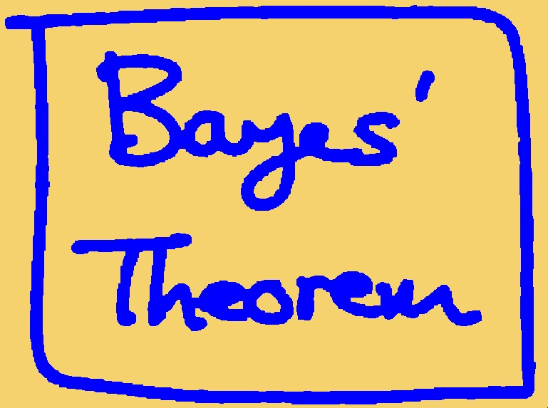
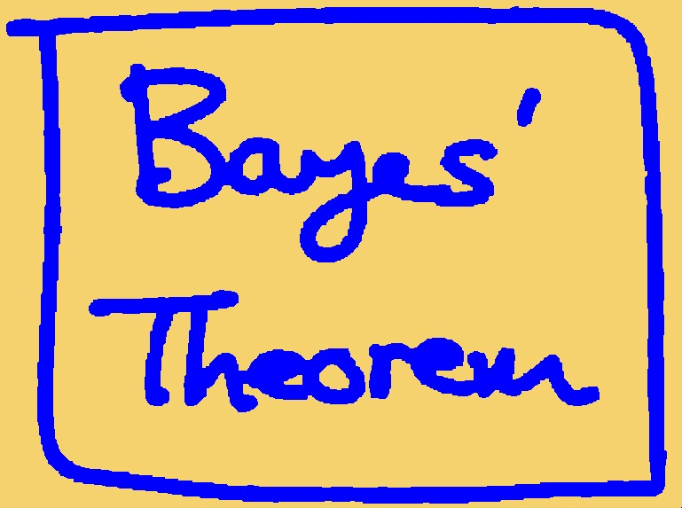
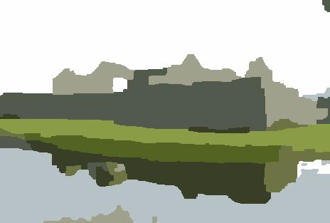

CA-2.2: Image Segmentation
Deadline: April 14, 2022 at 5pm
Read carefully: Academic integrity must be stricly followed. Copying-and-pasting from other's code or froms any sources is not allowed. Software will be used to detect any form of source code plagiarism. You must write your code in ipython notebook (or jupiter notebook), and indicate the number of the questions/instructions clearly. You must include your jupyter notebook file and the input images in your submission. You must show your code and your results on the submitted jupyter notebook .
Part I: Noise Removal
- Install Graphcuts for Python by executing: pip install PyMaxflow (or install manually from here). Read the online documents [website] to know how to set the edges of the graph.
- Write a python program to clean up the noise of the image in Figure 1, by employing an MRF and the binary graphcuts. See the pseudocode in C here.
- Change the value of the weighting factor (lambda) of the prior term, and show some different results (due to different values of lambda) in your report. You must state the values of your lambda along with the corresponding results.
- Show your results for different lambda values, and provide some discussion.
- Show the best result.
 

Figure 1. Left: Input noisy image. Right: Expected output.
Part II: Color Segmentation
- First, implement K-mean clustering to initialize the segmentation, and to obtain K-center colors. The user should be able to enter the value of K (the number of the segmented colors). Then, build MRFs with multilabels and optimize by using the multilabel graphcuts (using PyMaxFlow). In the multilabel graphcuts, you should define the smoothness cost when two labels are the same (e.g. cost = 0) and when they are different (e.g. cost = 1). The data cost can be defined as the distance between the pixel color to each of the K-center colors.
- Show the segmentation results of a given images with different settings of K.
- Discuss the drawbacks of the algorithm. How can you improve the algorithm?
- Show the best segmentation results of at least 3 different
input images, similar to:

Figure 1. Left: Input image. Right: Possible output.
Submission:
Submit your jupyter notebook via Luminus by the deadline. Late submission will be deducted 2 points (out of 10) for every 24 hours. Please contact the GA (Jeremy, Xin Yang) is you have any questions regarding this assignment.